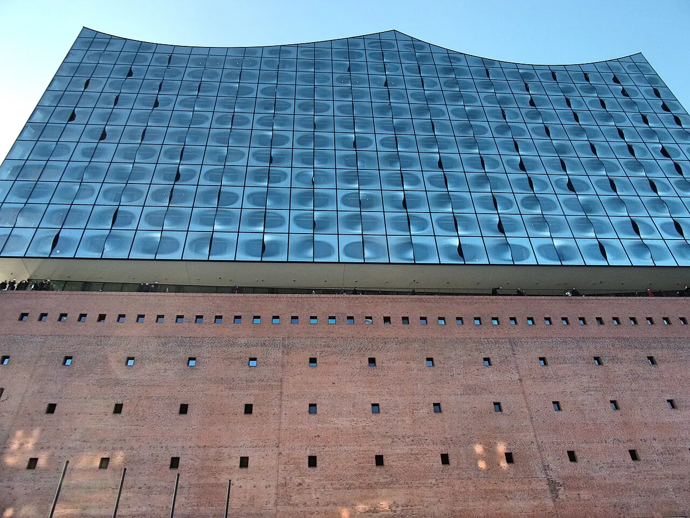
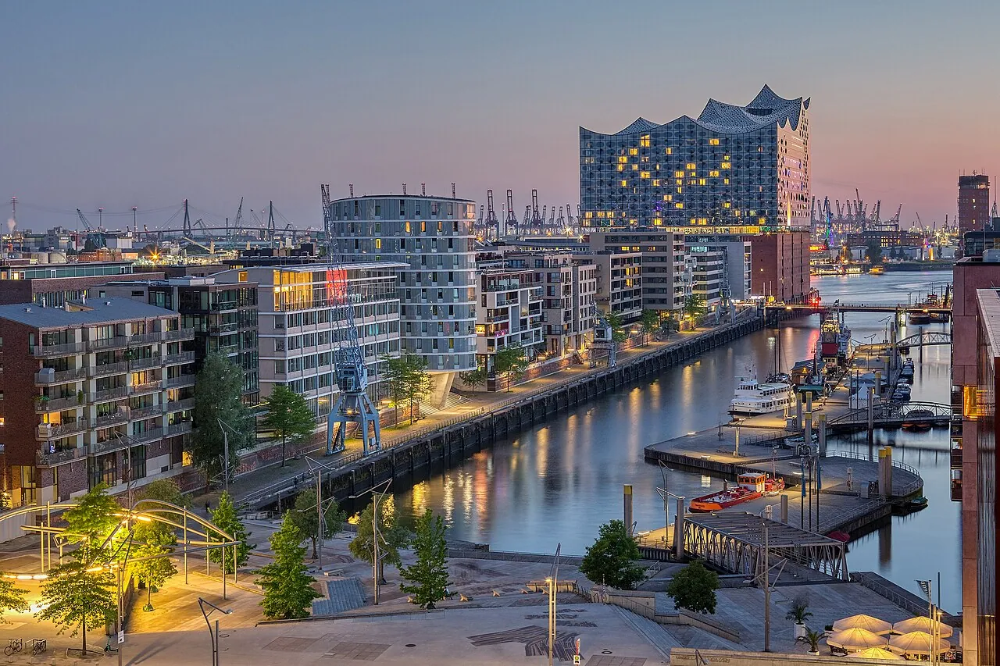

1/8 · ExteriorPhoto: Sparrow (麻雀) · CC BY-SA 4.0 · source2/8 · Exterior · Hamburg: Elbphilharmonie and museum ship Cap San DiegoPhoto: JoachimKohler-HB · CC BY-SA 4.0 · source3/8 · Exterior · Elbphilharmonie, HamburgPhoto: Aleksandr Zykov from Russia · CC BY-SA 2.0 · source

4/8 · Exterior · Die Elphi nach der letzten Bauabnahme und Eröffnung der Plaza im November 2016Photo: Pauli-Pirat · CC BY-SA 4.0 · source5/8 · Detail · Observation Deck, Elbphilharmonie, HamburgPhoto: Andrew Milligan sumo · CC BY 2.0 · source6/8 · Context · Elbphilharmonie seen from Hambourg-MittePhoto: Jygle · CC0 · source

7/8 · Context · Elbphilharmonie with Sandtorkai and Magellan Terraces in HafenCityPhoto: Axel Tschentscher · CC BY-SA 4.0 · source8/8 · Model · Modellphoto der Elbphilharmonie in HamburgPhoto: MissyWegner · CC BY 3.0 · source
The Elbphilharmonie (German pronunciation: [ˈɛlpfɪlhaʁmoˌniː] ; "Elbe Philharmonic Hall"), popularly nicknamed Elphi, is a concert hall in the HafenCity quarter of Hamburg, Germany, on the Grasbrook peninsula of the Elbe River.
The building is designed as a cultural and residential complex. The original 1966 brick façade of the Kaispeicher A, formerly a warehouse, was retained at the base of the building. On top of this a footprint-matching superstructure rests on its own foundation exhibiting a glassy exterior and a wavy roof line. About one thousand glass windows are curved. The building has 26 floors with the first eight floors within the brick façade. It reaches its highest point with 108 metres (354 ft) at the western side. The footprint of the building measures 120,000 square metres (1.3×10^6 ft2). A curved escalator from the main entrance at the east side connects the ground floor with an observation deck, the Plaza, at the 8th floor, the top of the brick section. The Plaza is accessible by the public. It offers a view of Hamburg and the Elbe. From the Plaza the foyer of the concert hall can be reached.


.jpg){kind=link}
.jpg){kind=link}

.jpg){kind=link}


.jpg){kind=link}